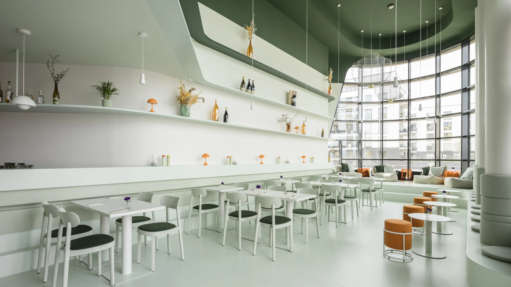
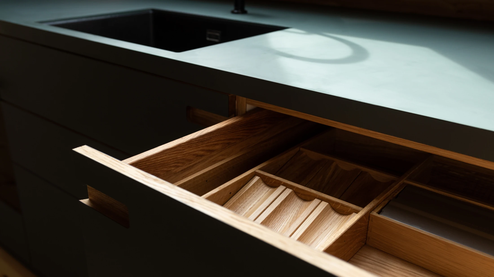
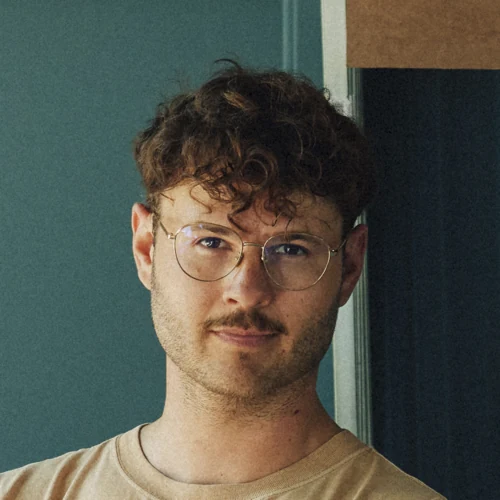
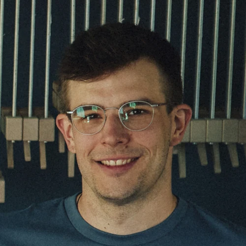

KÜCHENBAU

SCHREINEREI & RAUMGESTALTUNGBAD KREUZNACH · SEIT 2020
VON DER IDEE BIS INS DETAIL.
Dein Raum.
Dein Charakter.
Küchen, Möbel und Räume, die zu dir passen.
Individuell gedacht. Mit Sorgfalt gemacht.
FORM. MATERIAL. HANDWERK.
KÜCHENMÖBELTREPPENINNENAUSBAUVON HAND. MIT KOPF.
01 — DIE IDEE DAHINTER
Kein Raum ist wie deiner.
Warum sollten es
deine Möbel sein?
Eine Küche, in der alles seinen Platz findet. Eine Treppe, die den Raum prägt. Ein Möbelstück, das genau hierher gehört. Wir gestalten und fertigen für dein Leben – mit einem Blick für das Ganze und Liebe zum Detail.
Lerne parallelwerk kennen ↗02 — AUS UNSEREM WERK
Ideen werden Räume.
Ein Einblick in unsere Arbeit.
Jedes Projekt eine eigene Geschichte.
01
TREPPENBAU
Eine Verbindung mit Charakter.
MÖBELBAU
Für genau diesen Platz.
INNENAUSBAU & LADENBAU
Räume, die in Erinnerung bleiben.
Eine erste Vorstellung? Oder schon einen konkreten Plan?
Erzähl uns davon ↗
AUF JEDES DETAIL KOMMT ES AN.parallelwerk
03 — KOPF UND HAND
Gute Ideen.
Echtes Handwerk.
Wir sind Marvin und Tobias. Seit 2020 verbinden wir bei parallelwerk unsere Begeisterung für Gestaltung mit dem, was wir am liebsten tun: Dinge mit den eigenen Händen schaffen.
Mit unserem Team in Bad Kreuznach fertigen wir Küchen, Möbel und Innenausbauten. Persönlich im Austausch, präzise in der Umsetzung – auch gemeinsam mit deiner Architektin oder deinem Architekten.

Marvin GellweilerTischler & Holztechniker
Tobias KrebserTischler & HolztechnikerWAS WIR FÜR DICH MACHEN
Deine Idee.
Unsere Möglichkeiten.
Vom einzelnen Lieblingsstück bis zum kompletten Raum.
01Küchen nach Maß
Auf deinen Alltag, deinen Stil und deine Räume abgestimmt. Wir planen und fertigen deine Küche individuell – von der ersten Skizze bis zur Umsetzung.
Arbeiten entdecken ↗02Möbel & Einzelstücke
Stauraum, der sich einfügt. Ein Waschtisch mit Charakter. Ein Einzelstück mit besonderer Form. Wir fertigen Möbel passend zu deinem Raum.
Arbeiten entdecken ↗03Treppen
Eine Treppe verbindet mehr als zwei Etagen. Proportionen, Material und Linienführung machen sie zu einem Teil deiner Architektur.
Arbeiten entdecken ↗04Innenausbau & Türen
Für Zuhause, Gastronomie und Ladenbau: durchdachte Raumlösungen, flächenbündige Türen und Trennwände, die Gestaltung und Funktion zusammenbringen.
Über dein Projekt sprechen ↗04 — MATERIAL WIRD GEFÜHL
Manches muss man
in der Hand halten.
ECHTE MATERIALIEN. ECHTE MÖGLICHKEITEN.
Wie fühlt sich eine Oberfläche an? Wie wirkt die Farbe im Licht? In unserem Showroom in Bad Kreuznach kannst du Materialien direkt vergleichen und dein Projekt greifbar machen.
- Massivholz & Furnier
- Mineralwerkstoffe
- HPL & FENIX
- Linoleum & Valchromat
- Glas & Metall
BORA
Offizieller BORA-Partner.
Geräte erhältst du bei uns auch einzeln.
05 — LASS UNS ANFANGEN
BAD KREUZNACHWas hast du vor?
Eine Idee im Kopf, eine Skizze auf Papier
oder einfach Lust auf Veränderung?
Wir freuen uns darauf, dich kennenzulernen.